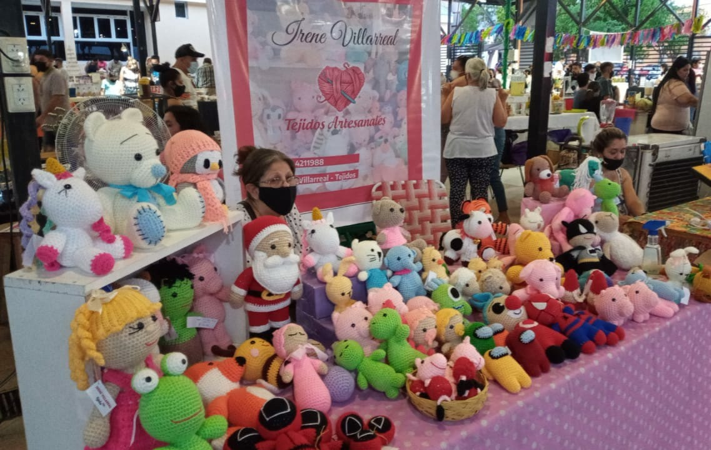

Irene Villarreal - Tejidos Artesanales
Me presento, mi nombre es Irene Villarreal, tengo 67 años y soy de la provincia de Catamarca Argentina. Desde pequeña mi hobby fue tejer y coser, pero me dedique profesionalmente a la medicina, pero luego de jubilarme decidí dedicarme a la elaboracion y venta de tejidos, muñecos, peluches, abrigos, nuigurumis, entre otras cosas.